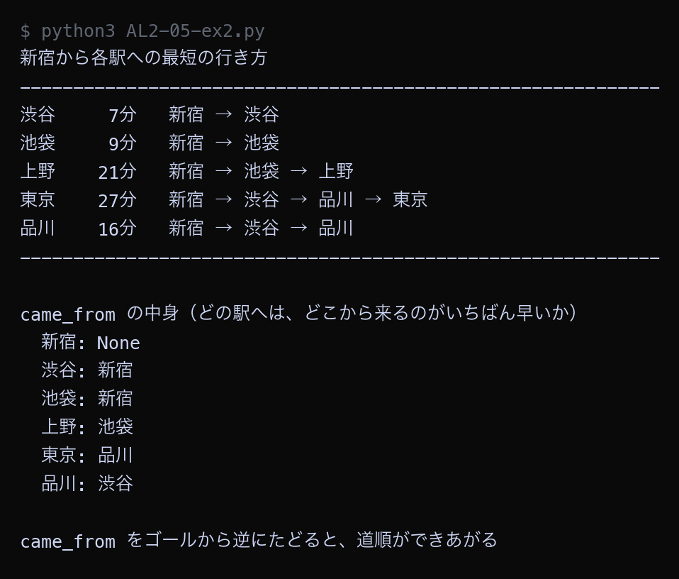

例題
例題1から例題4までのコードを実行してください。まず作業フォルダを用意します。
VS Code でフォルダとファイルを用意する
Step 1: 作業フォルダを作る
- デスクトップに AL2 という名前のフォルダを作る（後期の授業ではずっと同じフォルダを使う）
- AL2 フォルダの中に No05 という名前のフォルダを作る
└── AL2/
├── No04/ ← 前回のファイル
└── No05/ ← 第5回はここに保存
Step 2: VS Code でフォルダを開く
- Visual Studio Code を起動する
- メニューから 「ファイル」→「フォルダーを開く」を選ぶ
- Step 1 で作った AL2/No05 フォルダを選んで開く
左側のエクスプローラーに No05 フォルダの中身が表示される（最初は空）。
Step 3: 例題ごとにファイルを作って実行する
- 左側エクスプローラーの No05 の横にある 新しいファイルアイコンをクリック
- ファイル名を入力して Enter（例題1なら
AL2-05-ex1.py） - 例題のコードブロック右上の コピーボタンをクリック
- VS Code の編集画面に 貼り付ける（Ctrl+V / Cmd+V）
- 保存する（Ctrl+S / Cmd+S）
- 右上の ▷（再生ボタン）をクリックして実行する
今回作るファイル: AL2-05-ex1.py, AL2-05-ex2.py, AL2-05-ex3.py, AL2-05-ex4.py
今回のキーワード
| 用語（読み方） | 説明 |
|---|---|
| ダイクストラ法 Dijkstra法 | 重みが0以上のグラフで、出発点から各頂点までの最小コストを求めるアルゴリズム。 |
| 確定 かくてい / settled | その頂点までの最小コストが「もう変わらない」と決まった状態。確定した頂点は二度と書き直さない。 |
| 緩和 かんわ / relaxation | 「別の道を通ったほうが短い」と分かったときに、記録してある値を小さく書き直す操作。 |
| inf infinity / 無限大 | Pythonで float("inf") と書く。どんな数より大きいので「まだ行き方が見つかっていない」印として使える。 |
| 負の重み ふのおもみ / negative weight | マイナスの重み。混ざるとダイクストラ法は正しく動かない。 |
距離表が決まっていく様子を見る
ダイクストラ法を、手順が目に見える形で書いたプログラムです。
1つの手順が終わるたびに、距離表の中身をそのまま表示します。
表の中で * が付いている駅は「もう変わらない」と決まった駅です。
Python ── AL2-05-ex1.py # ダイクストラ法（1）: 距離表が1ステップずつ決まっていく様子を見る # 出発点から各駅までの「合計時間がいちばん短い行き方」を求める。 railway = { "新宿": [("渋谷", 7), ("池袋", 9), ("品川", 30)], "渋谷": [("新宿", 7), ("品川", 9)], "池袋": [("新宿", 9), ("上野", 12)], "上野": [("池袋", 12), ("東京", 6)], "東京": [("上野", 6), ("品川", 11)], "品川": [("新宿", 30), ("渋谷", 9), ("東京", 11)], } start = "新宿" INF = float("inf") # inf は「まだ行き方が分かっていない」ことを表す無限大 # distance = 出発点からその駅までの、今わかっているいちばん短い時間 distance = {} for station in railway: distance[station] = INF distance[start] = 0 # settled = 「もう変わらないと決まった駅」を入れる集合 settled = set() def show_table(step, chosen): """今の距離表を1行で表示する""" parts = [] for station in railway: value = distance[station] text = "-" if value == INF else str(value) if station in settled: text = text + "*" parts.append(f"{station}:{text:>4}") print(f"手順{step} 選んだ駅: {chosen:<4} " + " ".join(parts)) print("ダイクストラ法で、新宿から各駅までの最短時間を求める") print("（* が付いている駅は「もう変わらないと決まった駅」）") print("-" * 74) show_table(0, "なし") step = 0 while len(settled) < len(railway): step = step + 1 # 手順1: まだ決まっていない駅のうち、距離がいちばん小さい駅を選ぶ current = None for station in railway: if station in settled: continue if distance[station] == INF: continue if current is None or distance[station] < distance[current]: current = station if current is None: break # どこにもたどり着けない駅が残っている場合 # 手順2: 選んだ駅を「決まった」ことにする settled.add(current) # 手順3: 選んだ駅のとなりの駅について、より短い行き方が見つかれば書き直す for name, minutes in railway[current]: if name in settled: continue new_distance = distance[current] + minutes if new_distance < distance[name]: old = "-" if distance[name] == INF else distance[name] distance[name] = new_distance print(f" {name} の時間を {old} から {new_distance} に書き直した" f"（{current} 経由: {distance[current]} + {minutes}）") show_table(step, current) print("-" * 74) print() print("新宿から各駅までの最短時間") for station in railway: print(f" {station}: {distance[station]}分")
▶ 実行結果
![AL2-05-ex1.py の実行結果。ダイクストラ法で、新宿から各駅までの最短時間を求める / （* が付いている駅は「もう変わらないと決まった駅」） / -------------------------------------------------------------------------- / 手順0 選んだ駅: なし 新宿: 0 渋谷: - 池袋: - 上野: - 東京: - 品川: - / 渋谷 の時間を - から 7 に書き直した（新宿 経由: 0 + 7） / 池袋 の時間を - から 9 に書き直した（新宿 経由: 0 + 9） / 品川 の時間を - から 30 に書き直した（新宿 経由: 0 + 30） / 手順1 選んだ駅: 新宿 新宿: 0* 渋谷: 7 池袋: 9 上野: - 東京: - 品川: 30 / 品川 の時間を 30 から 16 に書き直した（渋谷 経由: 7 + 9） / 手順2 選んだ駅: 渋谷 新宿: 0* 渋谷: 7* 池袋: 9 上野: - 東京: - 品川: 16 / 上野 の時間を - から 21 に書き直した（池袋 経由: 9 + 12） / 手順3 選んだ駅: 池袋 新宿: 0* 渋谷: 7* 池袋: 9* 上野: 21 東京: - 品川: 16 / 東京 の時間を - から 27 に書き直した（品川 経由: 16 + 11） / 手順4 選んだ駅: 品川 新宿: 0* 渋谷: 7* 池袋: 9* 上野: 21 東京: 27 品川: 16* / 手順5 選んだ駅: 上野 新宿: 0* 渋谷: 7* 池袋: 9* 上野: 21* 東京: 27 品川: 16* / 手順6 選んだ駅: 東京 新宿: 0* 渋谷: 7* 池袋: 9* 上野: 21* 東京: 27* 品川: 16* / -------------------------------------------------------------------------- / / 新宿から各駅までの最短時間 / 新宿: 0分 / 渋谷: 7分 / 池袋: 9分 / 上野: 21分 / 東京: 27分 / 品川: 16分](images/a05_ex1_result.png)
手順1で新宿を確定させると、渋谷7分・池袋9分・品川30分が書き込まれます。手順2で渋谷を確定させたとき、品川の時間が30分から16分に書き直されています。直通の30分より、渋谷で乗りかえる16分のほうが早いことが見つかったためです。手順3以降、品川の16分はもう書き直されず、手順4で確定しています。最終的に、新宿から東京までは27分と求まりました。
どの道を通ったかを記録する
ダイクストラ法は最短時間を求めますが、そのままでは「どの道を通ったか」が分かりません。 距離を書き直すときに、どの駅から来たかも一緒に記録しておけば、あとで道順を組み立てられます。
Python ── AL2-05-ex2.py # ダイクストラ法（2）: 最短時間だけでなく「どの道を通ったか」も記録する # 距離を書き直したときに「どこから来たか」も一緒に記録しておけば、あとで道順を復元できる。 railway = { "新宿": [("渋谷", 7), ("池袋", 9), ("品川", 30)], "渋谷": [("新宿", 7), ("品川", 9)], "池袋": [("新宿", 9), ("上野", 12)], "上野": [("池袋", 12), ("東京", 6)], "東京": [("上野", 6), ("品川", 11)], "品川": [("新宿", 30), ("渋谷", 9), ("東京", 11)], } start = "新宿" INF = float("inf") distance = {} came_from = {} for station in railway: distance[station] = INF came_from[station] = None distance[start] = 0 settled = set() while len(settled) < len(railway): current = None for station in railway: if station in settled: continue if distance[station] == INF: continue if current is None or distance[station] < distance[current]: current = station if current is None: break settled.add(current) for name, minutes in railway[current]: if name in settled: continue new_distance = distance[current] + minutes if new_distance < distance[name]: distance[name] = new_distance came_from[name] = current # 「どこから来たか」を記録する def build_route(goal): """ゴールからスタートへ逆にたどって道順を組み立てる""" route = [] node = goal while node is not None: route.append(node) node = came_from[node] route.reverse() return route print("新宿から各駅への最短の行き方") print("-" * 60) for station in railway: if station == start: continue route = build_route(station) print(f"{station:<4} {distance[station]:>3}分 " + " → ".join(route)) print("-" * 60) print() # 「どこから来たか」の記録そのものを表示する print("came_from の中身（どの駅へは、どこから来るのがいちばん早いか）") for station in railway: print(f" {station}: {came_from[station]}") print() print("came_from をゴールから逆にたどると、道順ができあがる")
▶ 実行結果

各駅への最短の行き方が、駅名を矢印でつないだ形で表示されました。東京へは「新宿 → 渋谷 → 品川 → 東京」で27分が最短です。came_from の中身を見ると、東京には「品川」、品川には「渋谷」、渋谷には「新宿」と書かれています。東京から逆にたどると 東京 → 品川 → 渋谷 → 新宿 となり、順番をひっくり返せば道順になります。第1回の幅優先探索で経路を復元したときと、まったく同じやり方です。
マイナスの重みがあると間違える
ダイクストラ法が正しく動くのは「重みがすべて0以上」のときだけです。
マイナスの重みが1本でも混ざると、答えを間違えます。
3つのお店をめぐる例で確かめます。B店を通ると5円のクーポンがもらえるので、
B店からA店へ向かう辺の重みは -5 になっています。
Python ── AL2-05-ex3.py # ダイクストラ法（3）: マイナスの重みがあると答えを間違える # 3つのお店をめぐる。辺の重みは「かかる金額（円）」。 # B店を通ると5円のクーポンがもらえるので、B店からA店へ行く辺の重みは -5 になる。 shops = { "スタート": [("A店", 1), ("B店", 2)], "B店": [("A店", -5)], "A店": [], } start = "スタート" INF = float("inf") def dijkstra(): """ダイクストラ法で、スタートから各店までの最小金額を求める""" distance = {} for shop in shops: distance[shop] = INF distance[start] = 0 settled = set() print("ダイクストラ法の進み方") while len(settled) < len(shops): current = None for shop in shops: if shop in settled or distance[shop] == INF: continue if current is None or distance[shop] < distance[current]: current = shop if current is None: break settled.add(current) print(f" {current} を「{distance[current]}円で確定」とした") for name, price in shops[current]: if name in settled: print(f" {name} へ {distance[current]} + ({price}) = " f"{distance[current] + price} 円で行けるが、" f"{name} はすでに確定しているので無視された") continue new_price = distance[current] + price if new_price < distance[name]: distance[name] = new_price return distance def all_routes(here, visited): """同じ店を2度通らない行き方をすべて返す""" result = [[here]] for name, price in shops[here]: if name in visited: continue for rest in all_routes(name, visited + [name]): result.append([here] + rest) return result def route_price(route): total = 0 for i in range(len(route) - 1): for name, price in shops[route[i]]: if name == route[i + 1]: total = total + price break return total print("お店のつながり（数字は金額・円。マイナスはクーポンで安くなることを表す）") for shop in shops: if len(shops[shop]) == 0: print(f" {shop}: つながる先なし") else: print(f" {shop}: " + "、".join(f"{n}({p}円)" for n, p in shops[shop])) print("-" * 60) print() result = dijkstra() print() print("ダイクストラ法が出した答え") for shop in shops: print(f" {shop}: {result[shop]}円") print() print("すべての行き方を書き出して確かめる") best = {} for route in all_routes(start, [start]): goal = route[-1] price = route_price(route) print(f" {' → '.join(route)}: {price}円") if goal not in best or price < best[goal]: best[goal] = price print() print("本当の最小金額") for shop in shops: print(f" {shop}: {best[shop]}円") print() print("A店について、ダイクストラ法は", result["A店"], "円と答えたが、本当は", best["A店"], "円で行ける。") print("マイナスの重みがあると、ダイクストラ法は正しい答えを出せない。")
▶ 実行結果
![AL2-05-ex3.py の実行結果。お店のつながり（数字は金額・円。マイナスはクーポンで安くなることを表す） / スタート: A店(1円)、B店(2円) / B店: A店(-5円) / A店: つながる先なし / ------------------------------------------------------------ / / ダイクストラ法の進み方 / スタート を「0円で確定」とした / A店 を「1円で確定」とした / B店 を「2円で確定」とした / A店 へ 2 + (-5) = -3 円で行けるが、A店 はすでに確定しているので無視された / / ダイクストラ法が出した答え / スタート: 0円 / B店: 2円 / A店: 1円 / / すべての行き方を書き出して確かめる / スタート: 0円 / スタート → A店: 1円 / スタート → B店: 2円 / スタート → B店 → A店: -3円 / / 本当の最小金額 / スタート: 0円 / B店: 2円 / A店: -3円 / / A店について、ダイクストラ法は 1 円と答えたが、本当は -3 円で行ける。 / マイナスの重みがあると、ダイクストラ法は正しい答えを出せない。](images/a05_ex3_result.png)
ダイクストラ法はA店を1円と答えましたが、すべての行き方を書き出すと「スタート → B店 → A店」で-3円で行けることが分かります。ダイクストラ法は、A店を1円で確定させたあとにB店を調べています。そのときA店へ -3円で行けることが見つかりますが、A店はすでに確定しているので無視されてしまいます。「遠回りをすると安くなる」ことが起きると、確定という考え方そのものが成り立たなくなります。
出発点を変える／全探索と答え合わせ
出発点を6つの駅すべてに変えて距離表を作り、 さらに全探索（すべての行き方を書き出す方法）の答えと一致するかを機械的に確かめます。
Python ── AL2-05-ex4.py # ダイクストラ法（4）: 出発点を変えて表を作り、全探索の答えと一致するか確かめる railway = { "新宿": [("渋谷", 7), ("池袋", 9), ("品川", 30)], "渋谷": [("新宿", 7), ("品川", 9)], "池袋": [("新宿", 9), ("上野", 12)], "上野": [("池袋", 12), ("東京", 6)], "東京": [("上野", 6), ("品川", 11)], "品川": [("新宿", 30), ("渋谷", 9), ("東京", 11)], } INF = float("inf") def dijkstra(start): """start から各駅までの最短時間を辞書で返す""" distance = {} for station in railway: distance[station] = INF distance[start] = 0 settled = set() while len(settled) < len(railway): current = None for station in railway: if station in settled or distance[station] == INF: continue if current is None or distance[station] < distance[current]: current = station if current is None: break settled.add(current) for name, minutes in railway[current]: if name in settled: continue new_distance = distance[current] + minutes if new_distance < distance[name]: distance[name] = new_distance return distance def brute_force(start): """すべての行き方を書き出して、各駅までの最短時間を求める（答え合わせ用）""" best = {start: 0} def walk(here, total, visited): for name, minutes in railway[here]: if name in visited: continue new_total = total + minutes if name not in best or new_total < best[name]: best[name] = new_total walk(name, new_total, visited + [name]) walk(start, 0, [start]) return best stations = list(railway) print("出発点を変えたときの最短時間の表（分）") print("-" * 56) # 駅名は全角なので、見出しは空白5つ＋駅名（全角2文字＝半角4文字ぶん）でそろえる print("出発点" + "".join(" " + s for s in stations)) for start in stations: result = dijkstra(start) print(start + " " + "".join(f"{result[s]:>9}" for s in stations)) print("-" * 56) print() print("ダイクストラ法と全探索の答えが一致するか確かめる") print("-" * 56) all_same = True for start in stations: fast = dijkstra(start) slow = brute_force(start) for goal in stations: if fast[goal] != slow[goal]: print(f" ちがう: {start} → {goal} ダイクストラ {fast[goal]} / 全探索 {slow[goal]}") all_same = False if all_same: print(" すべての出発点・すべての目的地で、答えは完全に一致した") print("-" * 56) print() print("重みがすべて0以上なら、ダイクストラ法は全探索と同じ答えを、はるかに速く出せる。")
▶ 実行結果
![AL2-05-ex4.py の実行結果。出発点を変えたときの最短時間の表（分） / -------------------------------------------------------- / 出発点 新宿 渋谷 池袋 上野 東京 品川 / 新宿 0 7 9 21 27 16 / 渋谷 7 0 16 26 20 9 / 池袋 9 16 0 12 18 25 / 上野 21 26 12 0 6 17 / 東京 27 20 18 6 0 11 / 品川 16 9 25 17 11 0 / -------------------------------------------------------- / / ダイクストラ法と全探索の答えが一致するか確かめる / -------------------------------------------------------- / すべての出発点・すべての目的地で、答えは完全に一致した / -------------------------------------------------------- / / 重みがすべて0以上なら、ダイクストラ法は全探索と同じ答えを、はるかに速く出せる。](images/a05_ex4_result.png)
6つの駅それぞれを出発点にした表ができました。表は左上から右下への線を軸にして対称になっています。行き帰りで同じ時間がかかる路線図なので、新宿から東京への27分と、東京から新宿への27分は同じ値になります。ダイクストラ法と全探索の答えは、すべての組み合わせで完全に一致しました。重みがすべて0以上であれば、ダイクストラ法は全探索と同じ正しい答えを、はるかに速く出せます。